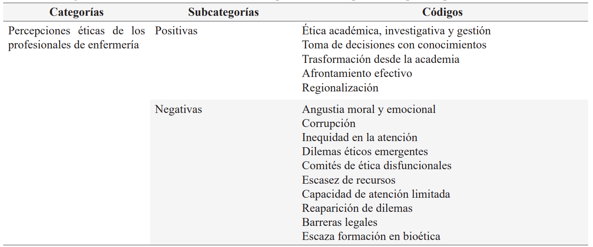
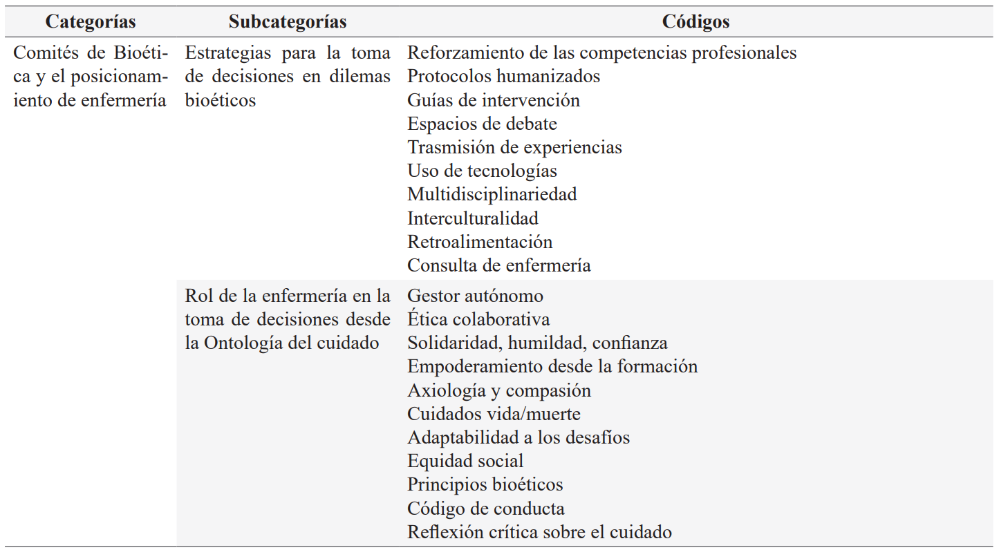
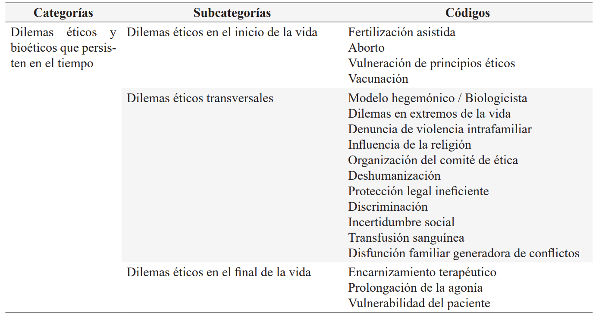
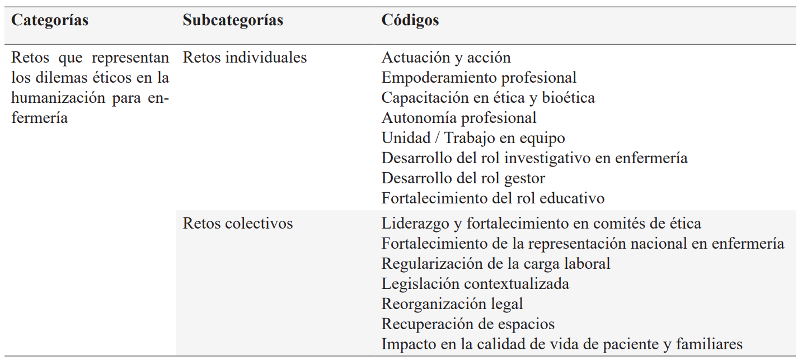
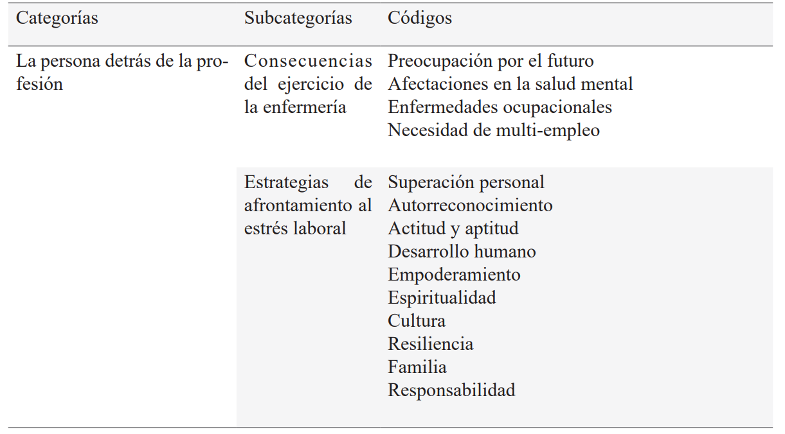

ISSN-PRINT 1794-9831 / E-ISSN 2322-7028
Vol. 19 Nº 3 / sep - dic, 2022 / Cúcuta, Colombia.
ISSN-PRINT 1794-9831 / E-ISSN 2322-7028
Vol. 19 Nº 3 / sep - dic, 2022 / Cúcuta, Colombia.
Resumen
Objetivo: Describir la percepción de los estudiantes de enfermería respecto a los dilemas éticos en el ejercicio de su profesión. Materiales y Métodos: Se realizó un estudio cualitativo, de tipo fenomenológico, con paradigma sociocrítico que involucra los juicios, los valores y los intereses de la sociedad. Para obtener la información, se aplicó una entrevista semiestructurada a un grupo focal, organizada mediante preguntas abiertas, las cuales se realizaron mediadas por la virtualidad; posteriormente fueron grabadas previo consentimiento informado, para finalmente transcribirlas para su análisis desde la perspectiva del discurso. El análisis se efectuó mediante un proceso de reducción, con codificación abierta en un inicio y axial después para su categorización, con la ayuda del ATLAS.ti, Versión 9, a prueba. Resultados: Luego del análisis de los discursos, emergieron 5 categorías que fueron: Percepciones éticas de los profesionales de la enfermería; comités de bioética y el posicionamiento de la enfermería; dilemas éticos y bioéticos que persisten en el tiempo; retos que representan los dilemas éticos en la humanización de la enfermería y de la persona que está detrás de la profesión. Todas con sus respectivas subcategorías y códigos. Conclusiones: Hay una realidad común sobre los dilemas éticos más frecuentes que enfrentan los estudiantes de enfermería desde su formación hasta el ejercicio profesional. Así mismo, existen diferencias según el marco legal de cada país o situación en particular. Es importante resaltar que la participación de la enfermería en los Comités de bioética aporta significativamente a los debates internos a la hora de abordar las problemáticas o dilemas éticos; igualmente, orientan el actuar del equipo de salud, en sus diferentes cargos desde la consultoría hasta la presidencia de estos equipos interdisciplinarios.
Palabras Claves: Ética; Bioética; Enfermería; Comités de ética.
Abstract
Objective: Describe the perception of nursing students regarding the ethical dilemmas in the practice of their profession. Materiales y Methods: A qualitative, phenomenological study was carried-out, with socio-critical paradigm that involves the judgements, values and interests of society. To obtain the information, a semi-structured interview was applied in a focus group, organized through open questions, which were mediated by virtual meetings; these were subsequently recorded with previous informed consent, to finally transcribe the interviews for a discourse analysis from their perspective. The analysis was completed through a reduction process, firstly with open coding and then using axial coding for its categorization, with help using ATLAS.ti, Version 9, trial. Results: After the discourse analysis, 5 categories emerged: Ethical perceptions of nursing professionals, bioethics committees and nursing positioning; ethical and bioethical dilemmas that persist over time; challenges that ethical dilemmas represent in the humanization of nursing and the person behind the profession. Each category with its respective subcategories and codes. Conclusions: There is a common reality about the most frequent ethical dilemmas that nursing students face from their education to their professional practice. Similarly, there are differences according to the legal framework of each country or particular situation. It is important to note that the participation of nursing in bioethical Committees significantly contributes to internal discussions to address the ethical dilemmas or issues; likewise, orientating the actions taken by the health teams, in their different positions from consultancy to presidency of these interdisciplinary teams.
KeyWords: Ethics; Bioethics; Nursing; Ethics Committees.
Resumo
Objetivo: Descrever a percepção dos alunos de enfermagem em relação aos dilemas éticos no exercício de sua profissão. Materiais e Métodos: Estudo qualitativo e fenomenológico, realizado com um paradigma sociocrático que envolve os julgamentos, valores e interesses da sociedade. Para obter as informações, foi aplicada uma entrevista semiestruturada a um grupo focal, empregando perguntas abertas, realizadas mediadas pela virtualidade; posteriormente, foram gravadas com permissão obtiva mediante consentimento livre e esclarecido, finalmente transcritas para análise na perspectiva do discurso. A análise foi realizada por meio de um processo de redução, com codificação aberta realizada inicialmente e depois axial para categorização, com a ajuda do ATLAS.ti, Versão 9. Resultados: Após a análise, surgiram 5 categorias que foram: Percepções éticas dos profissionais de enfermagem; comitês de bioética e o posicionamento da enfermagem; dilemas éticos e bioéticos que persistem ao longo do tempo; desafios que representam os dilemas éticos na humanização da enfermagem e da pessoa por trás da profissão. Todos com suas respectivas subcategorias e códigos. Conclusões: Há uma realidade comum sobre os dilemas éticos mais frequentes enfrentados pelos estudantes de enfermagem desde sua formação até a prática profissional. Da mesma forma, há diferenças do contexto legal específico de cada país ou situação em particular. É importante ressaltar que a participação da enfermagem nos Comitês de Bioética contribui significativamente para os debates internos na abordagem de problemas ou dilemas éticos; da mesma forma, orientam as ações da equipe de saúde, em suas diferentes posições, desde a consultoria até a presidência dessas equipes interdisciplinares.
Palavras-chave: Ética; Bioética; Enfermagem; Comitês de Ética.
Autor de correspondencia*
1* Enfermero
Universitario. Docente en
Enfermería en Universidad Nacional de
Salta, Sede Tartagal y Santa Victoria
Este. Argentina.
ernestoacosta533@gmail.com,
Enfermero
Universitario. Docente en
Enfermería en Universidad Nacional de
Salta, Sede Tartagal y Santa Victoria
Este. Argentina.
ernestoacosta533@gmail.com,  0000-0002-7547-8098
0000-0002-7547-8098
2* Magister en
Gerenciamiento Integral
de Servicios de Enfermería. Doctorando
en Educación Superior. Docente ACES
Latinoamérica. Guayaquil, Ecuador.
stefaniacedeno@aceslatinoamerica.com, 0000-0003-1609-899X
3* Licenciada en
enfermería. Máster en
Atención integral al niño. Docente investigadora de la Carrera de Enfermería
- Universidad de Guayaquil, Ecuador.
taycia.ramirezp@ug.edu.ec, 0000-0003-2730-0946
4* Enfermera.
Especialista en Docencia
Universitaria. Directora Red Latinoamericana de Educación En Enfermería
(ReLEdEn). Lima, Perú.
mvillalobos@grinama.com, 0000-0002-4760-7067
Recibido: 30 marzo 2022
Aprobado: 20 junio 2022
Para citar este artículo / To reference this article / Para citar este artigo: Acota EGR, Cedeño-Tapia SJ, Ramírez-Pérez T, Villalobos-Guiza MN, Ríos SJ. Dilemas éticos en enfermería desde una reflexión multicéntrica. 2022; 19(3):32-43. https://doi.org/10.22463/17949831.3292
© Universidad Francisco de Paula Santander.
Este es un artículo bajo la licencia CC-BY-NC-ND

Introducción
La misión de la enfermería es cuidar con respeto y dignidad a las personas, lo que implica afrontar dilemas éticos y aceptar la responsabilidad de tomar decisiones que protejan la salud (1-2), tomando en cuenta la gran riqueza intercultural y la heterogeneidad de las poblaciones (3).
La ética se concibe como una reflexión que profundiza en las acciones humanas y los valores que condicionan su actuar, forma parte de un marco normativo que busca justificaciones racionales (4). Una de las ramas de la ética, es la bioética, entendida como la ciencia que estudia la conducta de los profesionales de la salud relacionada con el respeto por la vida (5) en la medida en que se examinen a la luz de los valores y principios morales (6). Según la Organización Mundial de la Salud, la bioética estudia el campo de las ciencias y la atención en salud (7).
La Organización de las Naciones Unidas para la Educación, la Ciencia y la Cultura (UNESCO), emite la Declaración Universal sobre Bioética y Derechos Humanos como marco universal que sustenta políticas regidas por la Bioética y alienta a organizar comités pluridisciplinarios para resolver dilemas éticos (8), donde se tengan en cuenta aspectos como: solidaridad, responsabilidad individual, diversidad, equidad, reducción de desigualdades, desarrollo social (8), cuidado, emociones, virtudes e identidad (9).
En este sentido, para el abordaje de las distintas dimensiones del ser humano, se requiere de una atención integral por parte de un equipo de salud. Por ello, la enfermería desempeña un papel relevante dentro del equipo multidisciplinario de salud, al establecer comunicación con el sujeto, la familia y comunidad (10). En consecuencia, resulta imprescindible que la enfermería se involucre en los comités de bioética para participar de todas las funciones, permitiéndole profundizar en los dilemas éticos presentes y los que emergen a causa de la globalización.
De esta manera, la enfermería ante los dilemas éticos en el ejercicio de sus funciones podrá brindar una respuesta adecuada en cada caso clínico (11) dando sus opiniones, sugerencias y aportes con sustento científico (12), basadas en los principios de la bioética: beneficencia, no maleficencia, autonomía y justicia (13) y en consideración de los derechos humanos (8).
Objetivo
Describir la percepción de la enfermería respecto a los dilemas éticos en el ejercicio de su profesión.
Materiales y Métodos
Se realizó un estudio cualitativo, de tipo fenomenológico, con paradigma sociocrítico que involucra los juicios, valores e intereses de la sociedad (14). Se consideró oportuno hacerlo con estas características por que los investigadores formaron parte del fenómeno estudiado al conocer la problemática desde adentro y desde diferentes contextos. En ese sentido, la realización de entrevistas y testimonios se enriquecieron a partir del conocimiento de los sujetos, sus vivencias, ideología y lingüística acerca de la interpretación de los aspectos meta comunicativos y metapragmáticos (15).
Para obtener la información, se aplicó una entrevista semiestructurada, estructurada en torno a preguntas abiertas, las cuales se realizaron en diferentes momentos mediadas por la virtualidad. La muestra estuvo conformada por 5 sujetos participantes seleccionados intencionadamente por su experiencia en distintas áreas sobre el ejercicio de la profesión de la enfermería. Cada encuentro en promedio duró aproximadamente 45 minutos. Las entrevistas fueron grabadas en una plataforma de comunicación en línea en el marco de la I Conmemoración Latinoamericana por el día de la Enfermería, bajo el lema “Proteger e invertir juntos en la Humanización ¡Suma tu voz!”.
Estos encuentros estuvieron mediados por los objetivos del estudio, y conducidos por una moderadora, quien motivó a los participantes para que interactuaran entre ellos para lograr una sinergia óptima, lográndose la saturación teórica de los datos. Otra técnica empleada fue la observación participante, puesto que dos de las autoras, fueron parte de los sujetos de estudio, quienes convivieron de manera prolongada con aquello que se pretende comprender, apoyando la recolección y aproximación al fenómeno estudiado (16).
Por otro lado, a fin de evitar la parcialidad de los resultados se realizó la triangulación de datos entre los investigadores; también se contrastó la información que se obtuvo en el trabajo de campo con el sustento teórico que guía este estudio en función del objetivo trazado (17). Se solicitó previamente el consentimiento informado a cada uno de los entrevistados. Del mismo modo, se tuvo en cuenta la Declaración de Helsinki y el Código de Nuremberg para la investigación con personas. Además, se contó con la aprobación mediante Resolución del Consejo Directivo Nº319-2021 de la Facultad de Ciencias de la Salud de la Universidad Nacional de Salta.
Seguidamente se transcribieron las entrevistas de forma manual, y posteriormente se realizó el análisis, pasando a un proceso de reducción, codificación abierta en un inicio y axial después, para su categorización, con la ayuda del ATLAS. ti, Versión 9, a prueba. Los resultados se dispusieron en tablas, para su mejor visibilidad facilitando su discusión. Es necesario destacar que los criterios de rigurosidad científica que se aplicaron fueron la credibilidad, la confirmabilidad y la transferibilidad (18,19).
Resultados
Los sujetos de estudio fueron 5 profesionales del cuidado de diferentes países de Sudamérica, siendo originarios de Chile, Colombia, Perú, Argentina y Ecuador. Tres de los enfermeros se desempeñaban en instituciones privadas y dos en instituciones públicas. En cuanto al género, 3 fueron mujeres y 2 hombres. Para seleccionarlos se tuvieron en cuenta criterios como la experiencia profesional que fuera de más de 10 años, y una parte de los entrevistados son también autores del presente artículo.
Luego del análisis de los discursos, emergieron 5 categorías con sus respectivas subcategorías y códigos; los mismos fueron organizados siguiendo una matriz, dando lugar a la construcción de las Tablas 1, 2, 3, 4 y 5 sobre la categorización de los dilemas éticos en enfermería.
Tabla 1: Categorización de los dilemas éticos de las representaciones percibidas por los profesionales de enfermería
Fuente: Construcción propia
Tabla 2: Categorización de los dilemas de los Comités de Bioética y el posicionamiento de enfermería
Fuente: Construcción propia
Tabla 3: Categorización de los dilemas éticos que persisten en el tiempo
Fuente: Construcción propia
Tabla 4: Categorización de los retos que representan los dilemas éticos en la humanización para la enfermería
Fuente: Construcción propia
Tabla 5: Categorización de los dilemas éticos de la enfermera como persona detrás de la profesión
Fuente: Construcción propia
Discusión
Al encontrarse distintas categorías, se puso de manifiesto que los dilemas éticos en enfermería se viven desde diferentes realidades y contextos; sin embargo, en la región sudamericana se produjeron algunas semejanzas.
Percepciones éticas de los profesionales de la enfermería
La presente categoría recibió varios códigos que fueron divididos en positivos y negativos, entre los que se destacan como positivos el tomar decisiones con conocimiento para hacer frente a las situaciones, actitud que se debe inculcar desde la academia para un mejor desenvolvimiento laboral futuro.
Entre las respuestas que se originaron, se encontraron: “en los comités de ética asistencial particularmente en los hospitales, se enfrentan situaciones en donde toman decisiones el personal de salud relacionados a los dilemas éticos”. Otro de los informantes clave resaltó la labor de la enfermería, en el afrontamiento de crisis: “en todo lo que corresponde a la toma de decisiones al final de vida y como buscamos la manera de suplir el dolor en el paciente, de mitigarlo y llevarlo a lo que en algunos casos se denomina el buen morir”.
Conviene subrayar que la Ética está intrínsecamente relacionada con las profesiones de la salud (20), porque proporcionan un bien específico a la sociedad cumpliendo un deber en pro de logros progresivos; no obstante, existen limitaciones para la humanidad, tanto individual como colectiva.
Desde otra perspectiva, en la profesión de la enfermería, se plantea que la reflexión ética se basa en el respeto a dos fundamentos: la vida y la persona y en cuatro principios esenciales: Promover la salud, prevenir la enfermedad, restaurar la salud y aliviar el sufrimiento (21). Además, cabe resaltar que es esencial como profesión de la salud respetar la Declaración de los Derechos Humanos, el derecho a la vida y el derecho a la salud, así como también el derecho a la autodeterminación.
Por otro lado, también se pudo percibir la preocupación por aspectos negativos como son los dilemas éticos emergentes, la inequidad de la atención y la corrupción. Al respecto se escucharon respuestas como: “la pandemia COVID-19 frente a la cual la enfermería debió tomar decisiones, sin comité, pero desde el punto de vista humano tocó actuar”. Otro entrevistado planteaba que “la vacunación se encuentra en el campo de la base de la humanización, sin embargo, la corrupción incita a praxis inadecuadas”. Lo expresado anteriormente, coincide con los informes en investigaciones, revistas, periódicos y otros medios, encontrándose que “la corrupción es un fenómeno que ocasiona devastadoras consecuencias para la administración pública, socava su credibilidad y obstruye el cumplimiento de los fines que persiguen sus órganos e instituciones. Ello dificulta el acceso igualitario a bienes y servicios esenciales, y afecta principalmente la vida, y la salud” (22).
Cuando se habla de la “vacuna como un bien común” se entiende que la misma es para todos, sin embargó se privilegiaron/priorizaron algunos grupos de personas. Priorizar exige criterios, los cuales en su totalidad no son legítimos y dejan en espera los grupos que debían vacunarse primero; es decir, los grupos vulnerables (23). Este dato fue evidenciado en todas las respuestas dadas por los informantes clave en el estudio, destacándose que es un flagelo muy difícil de vencer aún en América Latina, afectando lo relacionado con la salud de las poblaciones en el contexto de la pandemia más reciente.
Comités de Bioética y el posicionamiento de la enfermería
Según Maestre, los Comités de Bioética Hospitalarios (CBH) “son grupos interdisciplinarios que se ocupan de la Docencia, la Investigación y las Consultas asociadas con los Dilemas Éticos que surgen durante la práctica hospitalaria” (23). Los comités se conforman con la finalidad de analizar las situaciones de conflictos y de esta manera brindar de forma integral el mejor asesoramiento en la toma de decisiones.
Por tanto, el Comité de ética es un espacio que permite el diálogo abierto y brinda la oportunidad de cuestionar las actuaciones profesionales, por lo que es necesario incentivar su creación en las instituciones de salud. Para ello se debe tener en cuenta la conformación de equipos interdisciplinarios, en donde exista pluralidad de pensamientos, fundamentos y conocimientos.
Madrid Valerio afirma que “las Enfermeras, a través de la provisión de Cuidados con niveles de autonomía diferentes y con fines diversos, tienen la capacidad de percibir de manera más profunda al usuario, desde diferentes perspectivas” (24). De esta manera la enfermería al integrar los comités de ética favorece la búsqueda de estrategias para la toma de decisiones frente a dilemas bioéticos, y así determinar su rol desde la ontología.
En este sentido, Álvarez (25), considera que, dentro de un Comité la enfermería incide en cuestiones relacionadas con el cuidado del paciente, empezando por la calidad de la información, la confidencialidad, la intimidad y el bienestar, tanto físico como psicológico. En coincidencia con lo expresado por los informantes respecto al rol de la enfermería en la toma de decisiones respecto a la naturaleza del cuidado, destacaron aspectos éticos de la práctica, así como también valores, relacionados con: responsabilidad profesional, ética colaborativa, solidaridad, humildad, confianza, empoderamiento desde la formación, axiología, compasión, cuidados vida/muerte, adaptabilidad a los desafíos, equidad social, principios bioéticos, código de conducta y la reflexión crítica sobre el cuidado.
Entre las estrategias para la toma de decisiones en los dilemas bioéticos en enfermería, los informantes expresaron que se debía tener en cuenta: el reforzamiento de las competencias profesionales, los protocolos humanizados, las guías de intervención, el uso de tecnologías, la multidisciplinariedad, la interculturalidad, la retroalimentación, los cuidados holísticos y la visibilización sobre la forma como se involucra la enfermería en función de sus diferentes roles autónomos apoyados en conocimientos científicos, para demostrar su posicionamiento en los comités de bioética.
Como estrategia también se tuvo en cuenta la promoción de espacios de debate y trasmisión de experiencias, por tanto, las instituciones deben plantearse dentro de sus protocolos, un espacio para analizar situaciones reales que favorezcan la discusión (26) para el tratamiento de casos específicos tal y como se evidencia en esta investigación.
Dilemas éticos y bioéticos que persisten en el tiempo
El dilema bioético surge cuando el profesional de la enfermería se enfrenta a los principios bioéticos con alternativas de posible actuación. Una vez que el comité de ética ha realizado el análisis minucioso del dilema ético, puede encontrar diversas alternativas, convirtiéndose en un reto y es aquí donde la toma de decisiones tiene un papel relevante para el bien y la integridad del sujeto de atención y de su familia, según sus distintas dimensiones (27).
A la luz de los resultados de esta investigación las subcategorías están vinculadas a: dilemas éticos en el inicio de la vida, dilemas éticos transversales y dilemas éticos en el final de la vida, algunos coinciden con los mencionados por Guardia- Mancilla y Villarreal-Cantillo (28-29). Por mencionar algunos ejemplos expresados por los informantes claves, relacionados con los dilemas al inicio de la vida están: la fertilización asistida y aborto. Por otra parte, los dilemas transversales como modelo hegemónico/biologicista, denuncian la violencia intrafamiliar y la influencia de la religión. En cuanto a los que tienen que ver con el final de la vida sobresalen: encarnizamiento terapéutico, prolongación de la agonía, transfusión sanguínea y vulnerabilidad del paciente.
De igual forma, se encuentran otros dilemas éticos a los que se debe enfrentar la enfermería, entre estos se puede mencionar lo que concierne con el derecho del paciente, el respeto por la autonomía, y el consentimiento informado, en concordancia con lo planteado por Rodríguez-Abrahantes (30); además están los que se refieren a las tecnologías, los cuales, se presentan desde las primeras prácticas académicas de la profesión de la enfermería y a lo largo de esta (31) constituyéndose en uno de los grandes retos para la formación del cuidado en la enfermería (32,33).
Retos que representan los dilemas éticos en la humanización para la enfermería
Para los profesionales de la enfermería el cuidado humanizado es su esencia y objeto de acción en su práctica diaria (34). La constante relación social, los somete a un sin fin de posibles situaciones, que requieren una reflexión profunda antes de brindar cuidados de calidad, teniendo en cuenta el contexto cultural; por ende, la comunicación se considera un factor fundamental y uno de los retos prioritarios (3,35), no solo con el usuario del cuidado, sino con todo el equipo de salud.
En efecto, la enfermería desempeña un rol importante en la toma de decisiones, dado su continuo crecimiento científico y ético (11). Además de formar parte de los comités de ética, cada profesional debe expresar con base en sus teorías, modelos y autonomía, su postura frente a una decisión determinada (10). Por tanto, es necesario distinguir el posicionamiento de la enfermería en los comités de ética, debido a sus conocimientos científicos y a la proximidad a pacientes, familiares y comunidad, permitiéndole incidir frente a las situaciones de costosa resolución tanto a nivel individual como colectivo (36).
En consecuencia, es indispensable reforzar los fundamentos teóricos al momento de plantear una toma de decisiones adecuada que considere todas las alternativas sobre la práctica basada en la evidencia (37,38). El enfoque teórico es una herramienta útil para el razonamiento y el estímulo del pensamiento crítico; también favorece el empleo y el manejo de la información acerca del paciente, para una gestión del cuidado ordenado y eficaz (39).
Por consiguiente, la enfermería influye de manera autónoma y como miembro del equipo interdisciplinario, en cualquiera de los ámbitos en que desarrolla funciones, ejerciendo una práctica efectiva de liderazgo (38). La adquisición de competencias es necesaria para un buen actuar, con base en conocimientos científicos sobre la moral y la ética profesional (39).
Todo profesional de la salud debe respetar los principios bioéticos de justicia, no maleficencia, beneficencia y autonomía. Al respecto, “La Declaración Universal sobre Bioética y Derechos Humanos de la UNESCO” ubica al hombre en un escenario global junto a sus semejantes y a los demás integrantes de la biósfera (8,9). En tal sentido, es importante reconocer los derechos humanos e integrarlos en la práctica profesional (40). La formación de la enfermería en bioética es fundamental para brindar un cuidado humanizado, con sensibilidad ética y humanizada, con conocimiento de la disciplina, lo que ayudará a encontrar respuestas ante las diferentes preguntas que surgen durante la práctica profesional.
Así pues, el conocimiento en ética y bioética aporta las normas básicas que deben guiar la pericia profesional, la conducta y la actitud del personal de enfermería. Si desde la formación no está bien delimitado y no se lleva a la práctica este aspecto, se corre el riesgo de que en el futuro los cuidados solo estén guiados por el uso de conocimientos científicos y tecnológicos, pero sin tener en cuenta la dimensión humana, lo que podría causar daño al sujeto de cuidado.
La persona detrás de la profesión
El profesional de la enfermería egresa con capacidades intelectuales y técnicas adquiridas en la formación; al mismo tiempo, se sabe que con el pasar de los años desarrolla capacidades más específicas de su campo de actuación propio del ejercicio laboral, fortaleciendo la adquisición de competencias transversales y genéricas (41) que van de la inexperiencia hasta el nivel de experto (40) para el cuidado de la vida. Es decir, que el profesional se moldea por la interacción con el paciente, la comunidad, el equipo interdisciplinario y los constantes avances científicos.
Asimismo, el estudiante de enfermería durante su formación y práctica, según los planteamientos de Patricia Benner, quien detalló los niveles de adquisición de habilidades a medida que transcurre el tiempo (40) guían las decisiones y compartimientos; por tanto, es necesario tener un acompañamiento cuando surgen los dilemas éticos durante el ejercicio de las prácticas preprofesionales para abordarlas éticamente, pero también durante todo el ejercicio profesional.
Desde el punto de vista de la ética, la formación en valores, códigos deontológicos, principios éticos y bioéticos, son fundamentales para el ejercicio de la profesión. Cuidar a una persona y poder decidir a la luz de sus derechos, al respeto por su autonomía, valorando sus creencias y su contexto, es parte de la ética, así como el actuar con responsabilidad, siempre en función de los códigos éticos de la profesión.
Por otro lado, hay que tener en cuenta que todos los profesionales de la enfermería se preocupan por el futuro incierto a través de interrogantes tales como: ¿cuándo y dónde podrá desempeñarse?, ¿cuánto sueldo obtendrá? Igualmente, se ven afectados en la salud mental por tantas muertes ya sea por patologías crónicas sin retroceso o por pandemias como la que se vive por el COVID-19, así como por el desgaste físico y por el requerimiento académico. Del mismo modo, al ser profesional los riesgos biológicos, físicos y psicológicos a los que se expone en el ambiente sanitario, los constantes turnos que debe afrontar como forma de múltiple empleo, por la poca valorización económica y profesional con el que cuenta la profesión de la enfermería, entre otros (42), generan en la persona una variedad de efectos sobre su dimensión humana, por lo que se le exige, en todo momento, poner a prueba sus mecanismos de afrontamiento.
Conclusiones
Conflicto de intereses
Los autores no declaran conflicto de interés.
Referencias